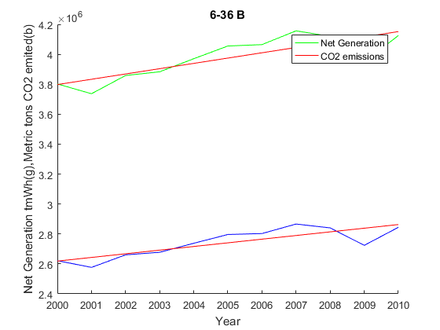
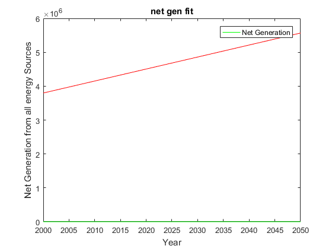
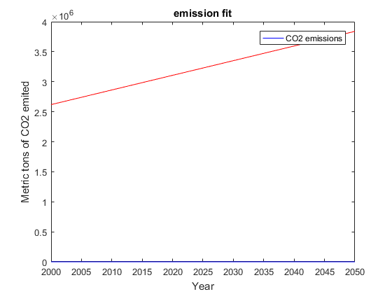

Contents
years = ones(1,11) * 2000;
adding = [0:10];
years = (years+adding)' ;
netGen = [3802105;3736644;3858452;3883185;3970555;4055423;4064702;4156745;4119388;3950331;4125060];
Part a
emissions = netGen* .68956
years1 = ones(1,51) * 2000;
adding = [0:50];
years1 = (years1+adding)' ;
emissions =
1.0e+06 *
2.6218
2.5766
2.6606
2.6777
2.7379
2.7965
2.8029
2.8663
2.8406
2.7240
2.8445
part B and C
genFit = fit(years, netGen, 'poly1')
emisFit = fit(years, emissions, 'poly1')
hold on
a1 = plot(genFit, years, netGen ,'g');
M1 = 'Net Generation';
a2 = plot(emisFit, years, emissions ,'b');
M2 = 'CO2 emissions ';
xlabel('Year'),ylabel('Net Generation tmWh(g),Metric tons CO2 emited(b)'), title('6-36 B')
legend([a1;a2], [M1;M2]);
snapnow
hold off
clf
fd =ones(1,51) ;
fd=fd';
a3 = plot(genFit,years1,fd ,'g');
legend(a3,M1);
xlabel('Year'),ylabel('Net Generation from all energy Sources'),title('net gen fit')
snapnow
clf
a3 = plot(emisFit,years1,fd ,'b');
legend(a3,M2);
xlabel('Year'),ylabel('Metric tons of CO2 emited'),title('emission fit')
genFit =
Linear model Poly1:
genFit(x) = p1*x + p2
Coefficients (with 95% confidence bounds):
p1 = 3.54e+04 (1.743e+04, 5.336e+04)
p2 = -6.699e+07 (-1.03e+08, -3.097e+07)
emisFit =
Linear model Poly1:
emisFit(x) = p1*x + p2
Coefficients (with 95% confidence bounds):
p1 = 2.441e+04 (1.202e+04, 3.68e+04)
p2 = -4.62e+07 (-7.104e+07, -2.136e+07)
Warning: Ignoring extra legend entries.

Warning: Ignoring extra legend entries.

Warning: Ignoring extra legend entries.
